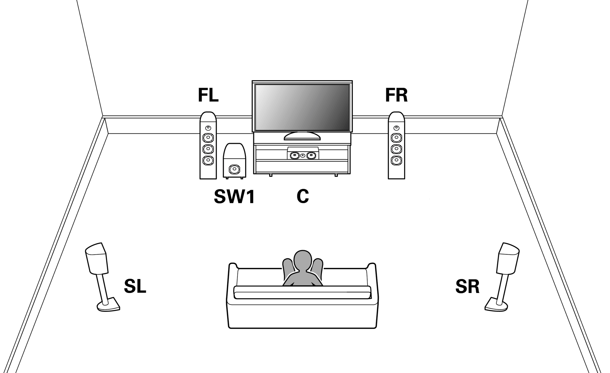
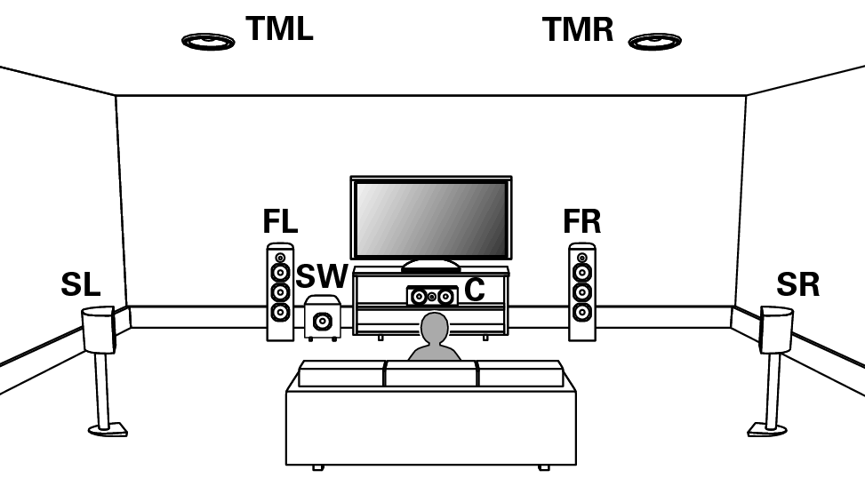
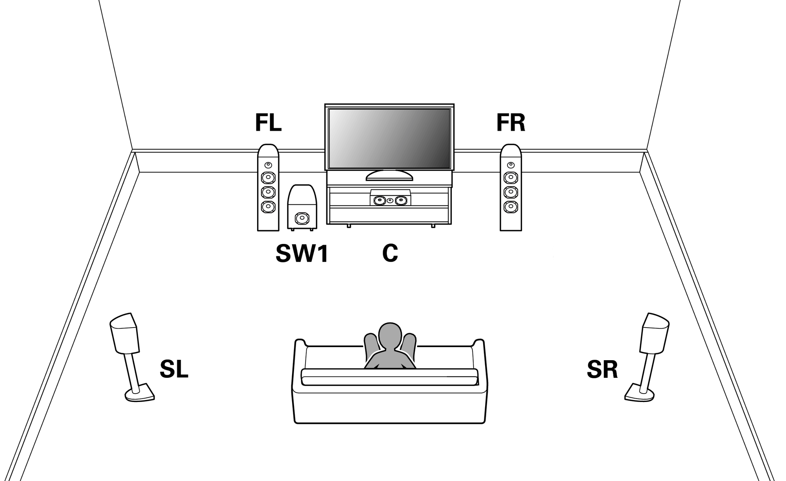
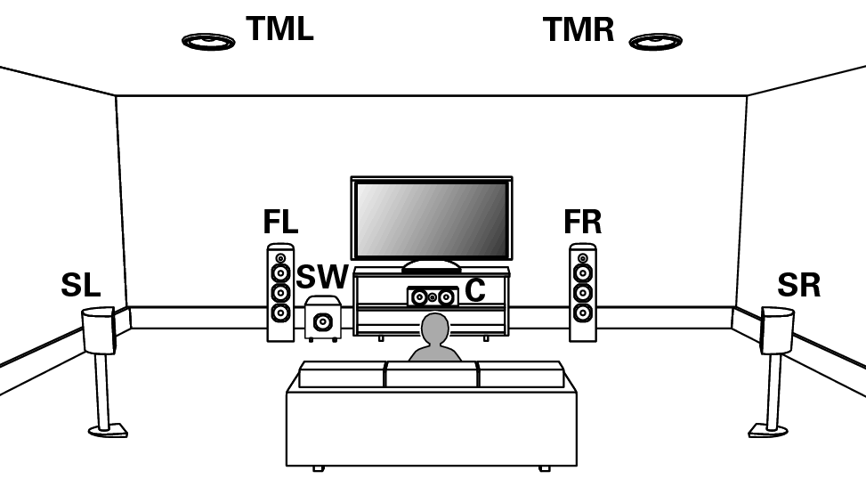

Nintendo switch
音響機器
Dolby atmos


「5.1ch」はスピーカーが5つとサブウーファー（低音に特化したスピーカー）が1つという意味です。その5つのスピーカーの配置は画像の通り。前方中央のセンター（C）、その左右にフロント（FL、FR）、視聴者の斜め後ろにサラウンド（SL、SR）があります。
他にも様々なサラウンドの構成がありますが、Nintendo Switchは5.1chしか対応していません。それなら、5.1chのホームシアターシステムを組めば完璧だと思いませんか？ しかし私は5.1.2ch以上を推奨します。

Atmosでは従来のサラウンドと同様のスピーカー配置に加えて、天井などにスピーカーを搭載し高所からの音があります。5.1.2chの「2」がそれです。Dolby Atmosでは、従来のサラウンドから継承した普通の高さのスピーカーを「フロア」と言い、高所のスピーカーを「ハイト」と呼んで区別します。スピーカーの配置が三次元的になる事で、音を配置できる範囲が「円」から「半球」に広がりました。
さらにDolby Atmosは新しい記録方式とそれに対応する再生方式を採用しています。これにより多くの再生環境に対応できるようになりました。Dolby Atmosでは推奨環境を7.1.4chとしていますが、最低要件の5.1.2chでも問題なく再生可能です。もちろん、スピーカー数は多い方が良いですが、対応するスピーカー数の幅が広いのが利点だと言えるでしょう。
私はリビングと客間兼ゲーム部屋それぞれに5.1.2chのホームシアターシステムを構築しています。残念ながらNintendo SwitchはDolby Atmosに対応していませんが、ハイトはSwitchでも活躍してくれます。
ステレオ音声を変換無しで5.1ch環境で再生すると、FLとFRの2つだけが鳴ります。せっかくサラウンド環境があるのにこれは勿体ないですね。そのためホームシアターシステムを統括するAVアンプにはアップミックス機能があります。直訳すると「上位変換」と言ったところでしょうか。入力された音声を成分分解し、配置された全てのスピーカーに割り当てます。
もちろん、ステレオをサラウンドにアップミックスするだけでなく、5.1ch音声を5.1.2chや7.1.4chにする事も可能です。アップミックスにより、チャンネル数が少ない音源でも視聴環境をフル活用できます。
Switchでサラウンド非対応つまりステレオまで対応のゲームソフトを遊ぶ場合も、音声信号は5.1chとして出力されます。どういう事かと言うと、ステレオ音声をFLとFRに割り当てて、残りのスピーカーとサブウーファーを無音にした5.1ch音声を生成し出力します。この似非5.1ch音声に基づきアップミックスされるため、5.1ch環境で再生してもFLとFR以外はほとんど動作しません。
根本的な解決には、ゲームソフトの対応状況を把握しソフトごとにSwitchの音声出力設定を変更するしかありません。逐一変更するのは手間ですよね。そこでハイトの出番です！
結果はほぼ2.0.2chになります。CとSLとSRは無音の信号が割り当てられているので、アップミックスをかけてもほとんど無音のままです。しかし伝送される形式は5.1ch音声。ハイトの情報が無いのでアップミックス時に元の音声信号からハイトの音声が生成されます。結果としてステレオにハイトを足した2.0.2chのような音になります。後方からの音はありませんが、音が鉛直方向に広がります。
もちろんステレオを5.1.2chにアップミックスするのに比べると劣りますが、純粋なステレオよりはずっと良いです。このように、ステレオ音声のゲームソフトでも音の広がりを損なわないという点で、Switchに5.1.2ch環境を導入する価値はあります。
もちろん5.1chサラウンド対応のゲームソフトの場合も、5.1ch環境よりも5.1.2ch環境の方が良い臨場感を得られます。XboxやApple MusicなどSwitch以外ではDolby Atmos対応コンテンツが増えているので、5.1.2ch以上にすればもっと楽しめるはずです。
これから音響環境のアップグレードをお考えの方は、少し背伸びして5.1.2ch環境にしてはいかがでしょうか？
【雑記】Switchは5.1chまでだけど5.1.2ch環境を導入すべき理由
みなさんこんにちは！元素さんです！
今年はゼノブレイド3、スプラトゥーン3、ベヨネッタ3、3が付く新作が多数発売されNintendo Switchはまだまだ盛り上がっていきます。
せっかく遊ぶなら、より良い音響で楽しみたいですよね。今回はそんな方に向けた雑記です。雑記なのでざっくりとしてます。
目次
5.1chサラウンド
Nintendo Switchの音声出力はモノラル、ステレオ、5.1chサラウンドの3つに対応しています。モノラルはスピーカーが一個、あるいは全スピーカーで同一の音声を流す事を指します。スピーカーが左右一対あり、左右で音が異なるのがステレオです。視聴者の周囲を囲うようにスピーカーを配置するのがサラウンドです。Switchはサラウンドの中でも「5.1ch」という構成にのみ対応します。
「5.1ch」はスピーカーが5つとサブウーファー（低音に特化したスピーカー）が1つという意味です。その5つのスピーカーの配置は画像の通り。前方中央のセンター（C）、その左右にフロント（FL、FR）、視聴者の斜め後ろにサラウンド（SL、SR）があります。
他にも様々なサラウンドの構成がありますが、Nintendo Switchは5.1chしか対応していません。それなら、5.1chのホームシアターシステムを組めば完璧だと思いませんか？ しかし私は5.1.2ch以上を推奨します。
Dolby Atmos
「5.1.2ch」のような数字を3つ以上使う表記は、主にDolby Atmosという音響技術で用いられます。Dolby AtmosはDolby Laboratories社が開発した空間オーディオ技術で、サラウンドをさらに拡張したものになります。
Atmosでは従来のサラウンドと同様のスピーカー配置に加えて、天井などにスピーカーを搭載し高所からの音があります。5.1.2chの「2」がそれです。Dolby Atmosでは、従来のサラウンドから継承した普通の高さのスピーカーを「フロア」と言い、高所のスピーカーを「ハイト」と呼んで区別します。スピーカーの配置が三次元的になる事で、音を配置できる範囲が「円」から「半球」に広がりました。
さらにDolby Atmosは新しい記録方式とそれに対応する再生方式を採用しています。これにより多くの再生環境に対応できるようになりました。Dolby Atmosでは推奨環境を7.1.4chとしていますが、最低要件の5.1.2chでも問題なく再生可能です。もちろん、スピーカー数は多い方が良いですが、対応するスピーカー数の幅が広いのが利点だと言えるでしょう。
私はリビングと客間兼ゲーム部屋それぞれに5.1.2chのホームシアターシステムを構築しています。残念ながらNintendo SwitchはDolby Atmosに対応していませんが、ハイトはSwitchでも活躍してくれます。
アップミックス
Switchが5.1chに対応しているとは言え、全てのゲームソフトがサラウンドに対応しているとは限りません。ステレオまでしか対応していないタイトルも多いです。ステレオ音声を変換無しで5.1ch環境で再生すると、FLとFRの2つだけが鳴ります。せっかくサラウンド環境があるのにこれは勿体ないですね。そのためホームシアターシステムを統括するAVアンプにはアップミックス機能があります。直訳すると「上位変換」と言ったところでしょうか。入力された音声を成分分解し、配置された全てのスピーカーに割り当てます。
もちろん、ステレオをサラウンドにアップミックスするだけでなく、5.1ch音声を5.1.2chや7.1.4chにする事も可能です。アップミックスにより、チャンネル数が少ない音源でも視聴環境をフル活用できます。
Switchの仕様
アップミックスのおかげでどんなゲームソフトもサラウンドで楽しめる…と思いきや、事はそう単純にはいきません。Nintendo Switchの仕様が難所となります。Switchでサラウンド非対応つまりステレオまで対応のゲームソフトを遊ぶ場合も、音声信号は5.1chとして出力されます。どういう事かと言うと、ステレオ音声をFLとFRに割り当てて、残りのスピーカーとサブウーファーを無音にした5.1ch音声を生成し出力します。この似非5.1ch音声に基づきアップミックスされるため、5.1ch環境で再生してもFLとFR以外はほとんど動作しません。
根本的な解決には、ゲームソフトの対応状況を把握しソフトごとにSwitchの音声出力設定を変更するしかありません。逐一変更するのは手間ですよね。そこでハイトの出番です！
ハイトのメリット
先述の通り、5.1ch音声を5.1.2chにアップミックスする事は可能です。ではSwitchでステレオ音声のゲームソフトを遊ぶ場合に出力される、FLとFR以外が無音の5.1ch音声の場合はどうなるのでしょうか？結果はほぼ2.0.2chになります。CとSLとSRは無音の信号が割り当てられているので、アップミックスをかけてもほとんど無音のままです。しかし伝送される形式は5.1ch音声。ハイトの情報が無いのでアップミックス時に元の音声信号からハイトの音声が生成されます。結果としてステレオにハイトを足した2.0.2chのような音になります。後方からの音はありませんが、音が鉛直方向に広がります。
もちろんステレオを5.1.2chにアップミックスするのに比べると劣りますが、純粋なステレオよりはずっと良いです。このように、ステレオ音声のゲームソフトでも音の広がりを損なわないという点で、Switchに5.1.2ch環境を導入する価値はあります。
あとがき
Switchの仕様上、サラウンド非対応でステレオまで対応のゲームソフトではFLとFR以外が無音になってしまいます。ハイトを追加した構成にすれば、このガッカリ感を少し軽減できると思います。もちろん5.1chサラウンド対応のゲームソフトの場合も、5.1ch環境よりも5.1.2ch環境の方が良い臨場感を得られます。XboxやApple MusicなどSwitch以外ではDolby Atmos対応コンテンツが増えているので、5.1.2ch以上にすればもっと楽しめるはずです。
これから音響環境のアップグレードをお考えの方は、少し背伸びして5.1.2ch環境にしてはいかがでしょうか？